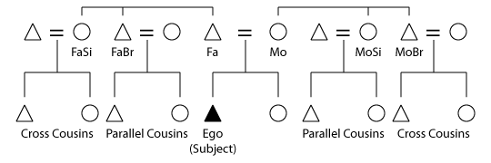
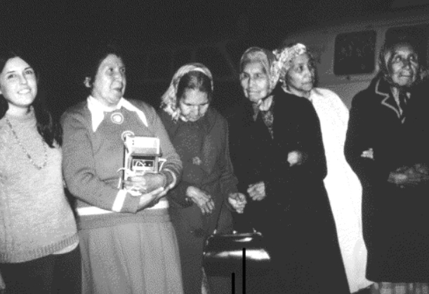
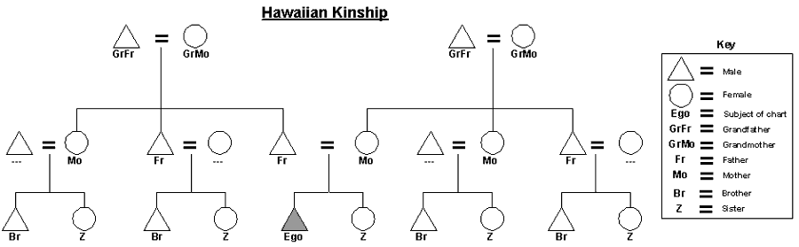
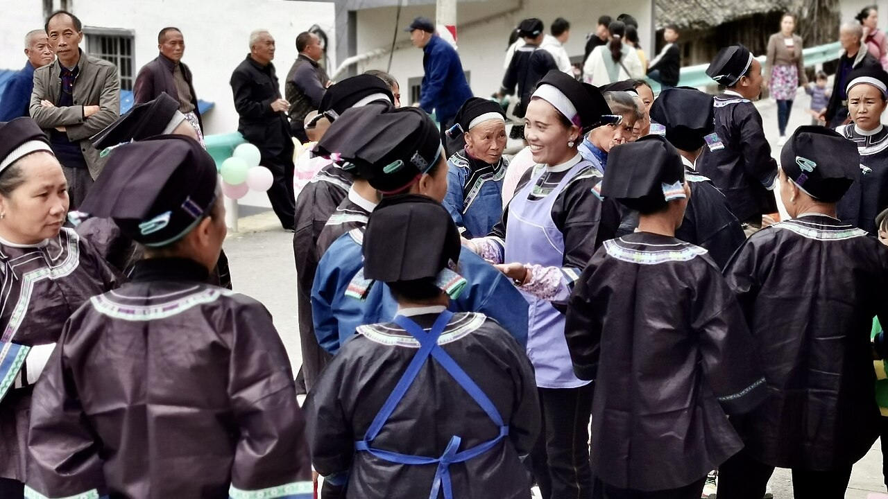
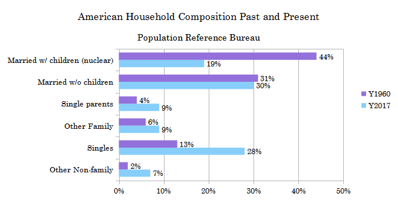

Kinship, Marriage & Family
Ask people anywhere on earth who they are, and sooner or later they will answer by telling you who they are related to. Kinship — the culturally recognized web of ties through birth, marriage, and choice — is the oldest and most powerful way human beings organize themselves, and for a century it sat at the very center of anthropology. This chapter shows how societies decide who counts as family, how they trace descent down the generations, how they name the relatives around them, why they make people marry out and give cattle or gold to seal the union, and where the newlyweds end up living. None of these answers is dictated by biology. Each is a cultural choice, and taken together they build the scaffolding on which whole societies stand.
By the end of this chapter you can
- Explain what kinship is and why anthropologists treat it as a form of social structure rather than a fact of biology.
- Distinguish consanguineal from affinal kin and read a basic genealogical diagram.
- Compare patrilineal, matrilineal, and bilateral descent, and define lineage, clan, and moiety.
- Describe the classic kinship terminology systems and explain what a naming system reveals about a society.
- State the major marriage rules — the incest taboo, exogamy, and endogamy — and contrast monogamy, polygyny, and polyandry.
- Explain bridewealth and dowry as forms of marital exchange and alliance.
- Identify the main postmarital residence patterns and family types, and connect residence to descent.
- Cite real ethnographic cases — Nuer, Trobriand, Nayar, Nyinba — that illustrate the diversity of human kinship.
Section 1Why kinship matters

Kinship as social structure
For most of human history there were no governments, police, banks, or schools. What organized life instead was kinship. Who you could ask for food, who owed you labor, who you could marry, who would avenge your death, who inherited the land — all of it flowed through relationships of blood and marriage. When early anthropologists such as Lewis Henry Morgan and later Bronisław Malinowski and A. R. Radcliffe-Brown tried to understand small-scale societies, they found that kinship was the political system, the economy, and the religion, braided together. This is why kinship became anthropology’s signature subject: to grasp how a society without a state holds together, you follow the kin ties.
Blood, marriage, and the genealogical grid
Anthropologists sort kin into two great classes. Consanguineal kin (“of the same blood”) are relatives by birth — parents, children, siblings, cousins. Affinal kin are relatives by marriage — in-laws, spouses. To chart these ties precisely, fieldworkers use a standard notation built from a handful of letters, always drawn from the viewpoint of a single reference person called Ego. The diagram that results — triangles for males, circles for females, an equals sign for marriage — lets an anthropologist record a stranger’s entire family in the field and compare it with families across the world.
| Symbol | Means | Symbol | Means |
|---|---|---|---|
| F | Father | M | Mother |
| B | Brother | Z | Sister (“Z” so it isn’t confused with S) |
| S | Son | D | Daughter |
| H | Husband | W | Wife |
| MB | Mother’s brother (a key figure later) | FZ | Father’s sister |
Kinship is made, not found
It is tempting to think kinship simply mirrors biology — that a mother is whoever gave birth, a father whoever supplied the sperm. Anthropology’s deepest lesson is that this is not so. Many societies recognize fathers who are dead, mothers who never gave birth, and “milk kin” created by shared nursing. The anthropologist David Schneider argued forcefully that even the Western idea of kinship-as-biology is itself a cultural theory, not a natural fact. Kinship, in other words, is an emic category — a system of meaning that each society builds — and the anthropologist’s job is to describe it on its own terms rather than assume ours is universal.
- Kinship is the culturally recognized web of relationships that, in stateless societies, does the work of politics, economics, and law.
- Consanguineal kin are related by birth; affinal kin by marriage.
- Anthropologists chart families with a standard notation centered on Ego.
- Kinship is a cultural construction, not a direct read-out of biology.
Section 2Descent systems

Unilineal descent: patrilineal and matrilineal
Most societies trace descent through one line only — a principle called unilineal descent — because a single line produces clear, non-overlapping groups that can own land and endure across generations. In patrilineal descent, a child belongs to the father’s group; sons and daughters take the father’s lineage, but only sons pass it on. The Nuer of South Sudan, famously studied by E. E. Evans-Pritchard, are strongly patrilineal: cattle, feuds, and political loyalty all run through the male line. In matrilineal descent, membership passes through the mother; the classic case is the Trobriand Islanders of Melanesia, whom Malinowski documented, where a boy inherits not from his father but from his mother’s brother.
The matrilineal puzzle and the mother’s brother
Matrilineal does not mean matriarchal — women rarely hold formal authority simply because descent runs through them. Instead, authority typically falls to a woman’s brother. Because a man’s heirs are his sister’s children, the mother’s brother (MB) becomes the disciplinarian and property-giver, while the father himself is an affectionate outsider. Anthropologists call this special bond the avunculate, and the tension it creates — a man torn between his own sons and his sister’s sons — is known as the “matrilineal puzzle.”
Bilateral descent and its variants
A minority of societies, including most of the modern industrial West and many foraging bands such as the Ju/’hoansi of the Kalahari, use bilateral (or cognatic) descent, tracing relatives equally through both parents. This produces a flexible personal network — the kindred — but no bounded, corporate group, since your kindred is not the same as your cousin’s. Some societies add further wrinkles: ambilineal descent lets each person choose the father’s or mother’s line, and double descent assigns some things (say, land) patrilineally and others (say, movable wealth) matrilineally.
| System | Traced through | Group formed | Ethnographic example |
|---|---|---|---|
| Patrilineal | Father’s line only | Corporate patrilineage / clan | Nuer, traditional Han Chinese |
| Matrilineal | Mother’s line only | Corporate matrilineage / clan | Trobriand, Hopi, Minangkabau |
| Bilateral | Both parents equally | Personal kindred (not bounded) | Ju/’hoansi, Euro-American |
| Double | Both, for different purposes | Two crosscutting sets | Yakö of Nigeria |
Unilineal systems build these ties into nested groups. A lineage is a descent group whose members can actually trace the genealogical links back to a common ancestor; a clan claims a common ancestor (often a mythical animal or plant totem) without tracing every step; and a moiety divides an entire society into two halves that typically must marry each other.
- Unilineal descent (patrilineal or matrilineal) traces membership through one line and builds corporate groups.
- Matrilineal ≠ matriarchal; authority often rests with the mother’s brother (the avunculate).
- Bilateral descent traces both sides and yields a flexible kindred rather than a bounded group.
- Lineage, clan, and moiety are nested levels of descent-based organization.
Section 3Kinship terminology

Why the words for relatives matter
English lumps your mother’s sister and your father’s sister under one word, “aunt,” and calls every child of every aunt or uncle a “cousin.” Other languages slice the family up completely differently — and those differences are not random. Lewis Henry Morgan, in his monumental Systems of Consanguinity and Affinity of the Human Family (1871), was the first to see that the labels a society uses reveal how it groups people for marriage, inheritance, and loyalty. If your language calls your father and your father’s brother by the same word, it is telling you that culturally they play the same role.
The six classic systems
Morgan and his successors distilled the world’s terminologies into a handful of types, usually named after the society where each was first described. They differ chiefly in how they treat cousins — and specifically whether they distinguish parallel cousins (children of a parent’s same-sex sibling) from cross cousins (children of a parent’s opposite-sex sibling), a distinction that is invisible in English but decisive elsewhere.
| System | How it names cousins | Typical setting |
|---|---|---|
| Eskimo (Inuit) | All cousins alike, but distinct from siblings; isolates the nuclear family | Bilateral societies (e.g., Euro-American) |
| Hawaiian | One term per generation & sex; cousins = siblings | Ambilineal / large households |
| Iroquois | Parallel cousins = siblings; cross cousins separate | Many unilineal societies |
| Sudanese | A different, descriptive term for nearly every relative | Complex, often stratified states |
| Crow | Iroquois-like, skewed by matrilineal descent | Strong matrilineal societies |
| Omaha | Iroquois-like, skewed by patrilineal descent | Strong patrilineal societies |
Classificatory versus descriptive
Morgan drew one broad line through all these systems. Descriptive terminologies (like Sudanese) give a unique label to each precise relationship. Classificatory terminologies (like Hawaiian or Iroquois) merge several biologically distinct relatives under one term — calling many men “father” or many women “mother.” To a newcomer this looks like confusion; in fact it is information, because the merges track exactly the people who share rights, duties, and marriage prohibitions.
- Kinship terms are not arbitrary; they encode a society’s rules for marriage, inheritance, and loyalty (Morgan, 1871).
- The key contrast is parallel vs cross cousins, invisible in English.
- The six classic systems are Eskimo, Hawaiian, Iroquois, Sudanese, Crow, and Omaha.
- Classificatory systems merge relatives who share a social role; descriptive systems name each separately.
Section 4Marriage

What marriage is, and whom you may marry
Marriage is famously hard to define, because every neat definition breaks against some real case. What marriage reliably does, cross-culturally, is create legitimate affinal ties, assign the children a place in the descent system, and forge an alliance between two groups. Claude Lévi-Strauss, in The Elementary Structures of Kinship, argued that marriage is fundamentally an exchange: by giving away a daughter or sister, a group obligates another group to reciprocate, weaving separate families into a wider society. Marriage, in this alliance view, is less about the couple than about the bond between the families that give and receive them — and it is often marked, as Arnold van Gennep noted, by an elaborate rite of passage that carries the couple from one social status to another.
Every known society has an incest taboo forbidding sex and marriage among close kin; Lévi-Strauss saw it as the very threshold between nature and culture, the rule that forces groups to look outward. Beyond that near-universal, societies add exogamy rules requiring marriage outside a defined group (your clan, your village) and endogamy rules requiring marriage within one (your caste, your religion, your class). The same person may face both at once — obliged to marry outside the lineage but inside the caste. Preferential rules can go further still, favoring cross-cousin marriage or, after a death, the levirate (a widow marries her late husband’s brother) or the sororate (a widower marries his late wife’s sister).
How many spouses: monogamy and plural marriage
Cultures also differ in how many spouses a person may have at once. Monogamy pairs one person with one; polygamy permits more. The common form of polygamy is polygyny (one husband, several wives), widespread in patrilineal African and Middle Eastern societies and often a marker of a man’s wealth and status. Far rarer is polyandry (one wife, several husbands): among the Nyinba and other Tibetan peoples, fraternal polyandry has a set of brothers share one wife, keeping the family’s scarce mountain land undivided. The Nayar of Kerala, studied by Kathleen Gough, pushed the definition to its limit, where a woman could have several “visiting husbands” and no husband lived with her — she remained in her matrilineal household alongside her mother, siblings, and her brothers’ children — a case that forced anthropologists to rethink what marriage even is.
| Form | Arrangement | Where it is common / example |
|---|---|---|
| Monogamy | One spouse at a time | Industrial states; many societies |
| Serial monogamy | One at a time, but several over a life | Modern West (divorce & remarriage) |
| Polygyny | One husband, multiple wives | Most common plural form; e.g., Nuer, Hausa |
| Polyandry | One wife, multiple husbands | Rare; Nyinba & Tibetan, Toda |
Marriage as exchange: bridewealth and dowry
Because marriage joins groups, it almost always moves wealth. In bridewealth (or brideprice), the groom’s family transfers goods — classically cattle among the Nuer and other East African peoples — to the bride’s family, compensating them for the loss of her labor and children and legitimizing the offspring as members of the husband’s lineage. Where goods or labor are scarce, a man may instead give bride service, working for his in-laws for years. The mirror image is dowry, wealth that travels with the bride from her family to the marriage, common historically in Europe and in South Asia, where it can function as a daughter’s early inheritance — but also, in its inflated modern forms, as a source of serious social harm.
- Marriage legitimizes children, assigns descent, and above all forges alliances between groups (Lévi-Strauss).
- The incest taboo is near-universal; exogamy and endogamy further channel whom one may marry.
- Monogamy, polygyny, and (rarely) polyandry are the main forms; the Nayar case tests the definition of marriage itself.
- Bridewealth flows to the bride’s kin; dowry flows with the bride — both bind families through exchange.
Section 5Residence and family

Where the newlyweds go: postmarital residence
Once a couple marries, they must live somewhere, and the choice is rarely free — it follows cultural rule. Postmarital residence patterns turn out to line up tightly with descent, because a society that traces membership through men usually wants its men to stay put together. In patrilocal (virilocal) residence, the couple joins or settles near the husband’s father’s household — the most common pattern worldwide, and the natural partner of patrilineal descent. In matrilocal (uxorilocal) residence, they move to the wife’s kin, as among the matrilineal Hopi and Navajo (Diné). In avunculocal residence, distinctive to some matrilineal societies, the couple lives with the husband’s mother’s brother, keeping the matrilineage’s men together.
Other patterns and the industrial shift
Two further options round out the picture. Ambilocal (bilocal) residence lets the couple choose either set of kin, a flexibility prized by foragers who must track scattered resources. Neolocal residence — the couple sets up an independent household apart from both families — is comparatively rare in human history but dominant in industrial, wage-earning societies, where jobs and housing markets, not lineages, decide where people live. That the modern West sees neolocal residence as “natural” is itself a clue to how a market economy reshapes kinship.
| Residence pattern | Couple lives with / near | Correlates with |
|---|---|---|
| Patrilocal | Husband’s father’s kin | Patrilineal descent (most common) |
| Matrilocal | Wife’s kin | Matrilineal descent (Hopi, Navajo) |
| Avunculocal | Husband’s mother’s brother | Some matrilineal societies |
| Ambilocal | Either set, by choice | Foraging bands; bilateral kin |
| Neolocal | A new, independent household | Industrial / market economies |
Family types
Residence in turn shapes what kind of household forms. The nuclear family — parents and their children — is one small building block, and every person belongs to two of them: a family of orientation into which they are born, and a family of procreation they help create by marrying. But nuclear households are far from universal. Extended families, spanning three or more generations under one roof or compound, are the historical norm across much of the world; joint families gather married brothers and their wives and children together, as in classical South Asia; and blended families knit together children from previous unions. The tidy nuclear household of the mid-twentieth-century West is a historically recent and geographically narrow arrangement, not the shape of family everywhere.
- Postmarital residence rules (patrilocal, matrilocal, avunculocal, ambilocal, neolocal) usually track the descent system.
- Neolocal residence is rare historically but typical of industrial, market economies.
- Everyone belongs to a family of orientation (birth) and a family of procreation (marriage).
- The nuclear family is only one form; extended, joint, and blended families are widespread.
The chapter in one breath
- Kinship is the culturally built web of relatedness that, in stateless societies, does the work of politics, economics, and law — and it is constructed, not simply biological.
- Kin are consanguineal (by birth) or affinal (by marriage), charted from a reference person, Ego.
- Descent runs patrilineally, matrilineally, or bilaterally; unilineal systems build lineages, clans, and moieties, and matriliny often empowers the mother’s brother.
- Kinship terminology (Morgan’s Eskimo, Hawaiian, Iroquois, Sudanese, Crow, Omaha systems) encodes marriage and inheritance rules; the cross/parallel cousin distinction is central.
- Marriage creates alliances between groups (Lévi-Strauss); the incest taboo, exogamy, and endogamy govern partners, while forms range from monogamy to polygyny to polyandry.
- Bridewealth flows to the bride’s kin and dowry flows with the bride, binding families through exchange.
- Postmarital residence tracks descent, and the nuclear family is just one of many family types — extended, joint, and blended families are the wider human norm.
ReferenceWords worth knowing
A quick reference for the terms in this chapter — skim it now, or circle back whenever a word trips you up.
- Affinity (affinal kin)
- Relationship created through marriage rather than birth — in-laws and spouses.
- Avunculocal residence
- A pattern in which a married couple lives with the husband’s mother’s brother, found in some matrilineal societies.
- Bilateral descent
- Tracing kinship equally through both the mother’s and the father’s lines, producing a personal kindred.
- Bridewealth
- Goods (classically cattle) transferred from the groom’s family to the bride’s to legitimize the marriage.
- Clan
- A descent group claiming a common (often mythical or totemic) ancestor without tracing every genealogical link.
- Consanguinity
- Relationship by birth or “blood” — parents, children, siblings, cousins.
- Cross cousin
- The child of a parent’s opposite-sex sibling (father’s sister’s or mother’s brother’s child); often a preferred marriage partner.
- Descent
- The culturally recognized rule for tracing kin ties down the generations and assigning group membership.
- Dowry
- Wealth that travels with the bride from her family into the marriage, sometimes an early inheritance.
- Endogamy
- A rule requiring marriage within a defined group, such as a caste or religion.
- Exogamy
- A rule requiring marriage outside a defined group, such as one’s clan or village.
- Incest taboo
- The near-universal prohibition on sex and marriage among close kin.
- Kinship
- The culturally constructed web of relationships through birth, marriage, and choice.
- Lineage
- A descent group whose members can trace the specific genealogical links to a common ancestor.
- Matrilineal descent
- Tracing descent and group membership through the female line.
- Moiety
- One of two halves into which a whole society is divided, typically obliged to intermarry.
- Neolocal residence
- A pattern in which a married couple establishes a new household apart from both families; typical of industrial societies.
- Nuclear family
- A household of parents and their children; each person has a family of orientation and of procreation.
- Parallel cousin
- The child of a parent’s same-sex sibling (father’s brother’s or mother’s sister’s child); often classed as a sibling and forbidden as a spouse.
- Patrilineal descent
- Tracing descent and group membership through the male line.
- Polyandry
- Marriage of one wife to multiple husbands; often fraternal, as among the Nyinba.
- Polygyny
- Marriage of one husband to multiple wives; the most common form of plural marriage.
- Unilineal descent
- Tracing descent through a single line only — either patrilineal or matrilineal.